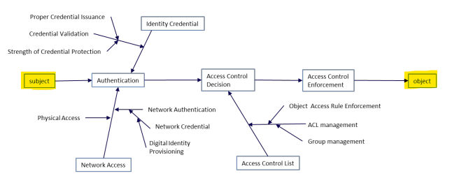

Considerations for the protection of data in each phase of the
life cycle can vary if data is stored, processed, or archived. Software system
design and implementation must “account” for user and service roles and
responsibilities to ensure proper separation of duties. Accounts accessing data
should support the concept of , the principle that a
security architecture is designed so that each entity is granted the minimum system
authorizations and resources that the entity needs to perform its function, to limit
application attack surface.
Objectives
Describe user and software data access provisions.
Overview
Users and service accounts have a useful life. —employees
and stakeholders—are onboarded and offboarded. Objects—the data and resources they
require access to—are created, managed through the life cycle, and eventually
disposed. Application access control considerations must support both life cycles in
tandem to reach a measure of security and operational efficiency. Access control can
require complex trust relationships to support business rules. This is especially
true when the root of trust is derived from many source organizations. The following
graphic depicts access control trust for a relatively uncomplex, singular scenario.

Figure 7: Access Control Subject Object Relationship
User and Service Data Access and
Provisioning
Service and users have similar considerations as the data
subject for organizations provisioning accounts. An organization must start by
defining the attribute “rule” architecture, subject definitions, and object
definitions. These three considerations provide the foundation for authorization
rules when provisioning accounts and should be explicitly documented within the
organization preferably at a higher than the information systems level of the
business. Consistent rule sets of valid values must be defined and actioned at an
enterprise level for subjects and objects. Authorized decisions must be based on
known, consistent values. The life cycle management of rules is always the
responsibility of the provisioning organization whether access attribution occurs
inside or outside the organization.
Attribute Architecture → Rules. The access control relationship between
data and accounts is dictated by policy attributes. All mandatory attributes
should be defined and limited to acceptable values based on policies. These
attributes and value limitations must be distributed to stakeholders to help
enable owner organizations with rule and relationship development.
Object Attributes → Data. Data attributes should be assigned upon
object creation. Object attributes are often dictated by business (non-security)
processes and requirements. Attributed data should support logical access
decisions while providing provisions for validation and audit. Subjects should
not be capable of modifying data attributes to manipulate access control
decisions.
Some additional considerations for
creating object attributes are:
Users will not know the values of an object attribute (e.g., to which sensitive
compartment a given user is authorized).
Attributes need to be kept consistent in digital and written policies. Tools and
software must support business processes.
Subject Attributes → Account. People subject attributes are provisioned
upon involvement with an organization and could be provisioned by various
authorities (e.g., human resources, security). This type of data access approach
is well matured based on obtaining authoritative data. Account access attributes
may include physical location or MAC address of a device from the request
originator. Account attribute provisioning capabilities should be dependable,
and the decision source should be authoritative. Quality, assurance, privacy,
and service expectations should all be considered. Attribution for service
accounts should be similar. Irrespective of machine or human interfacing,
accounts should be monitored and audited with a level of rigor associated with
access and object levels.
Data Access Monitoring
Architecture
It is unrealistic to attempt to monitor every data interaction
within an enterprise. Security practitioners must carefully align monitoring,
logging, and auditing of accounts and object requests with respect to the
sensitivity of data and privileges of accounts. An organization could monitor the
status of authorized and unauthorized subject and object interactions on a network
to aggregate metrics such as logical asset locations, MAC addresses, and
policies/procedures for network connectivity. Metrics can be consolidated overtime
and might be aggregated hourly, daily, or weekly in a progressive manner.
Security practitioners can also consider password policy
implementations as a mechanism to ensure stale accounts are deactivated. Human users
who fail to change their password within an organizationally defined time, such as
90 days, should be deactivated. Likewise, service accounts that do not request
objects within an organizationally defined time, such as 10 days, should be
deactivated. Organizations define access metrics and monitoring frequencies in a way
that supports business operations. In addition to defining access metrics,
organizations determine how the information will be collected and delivered within
business tiers as well as external to the organization.
Software architecture requirements should be functional and
support data collection, storage, and analysis capabilities. The use of automated
mechanisms and methodologies should be employed to allow for increased efficiencies
and insight into access events. Data access and audit should be architected in a way
that maximizes data reuse and limits data calls. Additionally, software developers
and security personnel should embrace interoperable data specifications such as
SCAP, XML, or JSON, when possible, to enable data reuse.
Data Access Provisioning (3.5)
Considerations for the protection of data in each phase of the life cycle can vary if data is stored, processed, or archived. Software system design and implementation must “account” for user and service roles and responsibilities to ensure proper separation of duties. Accounts accessing data should support the concept of , the principle that a security architecture is designed so that each entity is granted the minimum system authorizations and resources that the entity needs to perform its function, to limit application attack surface.
Objectives
Overview
Users and service accounts have a useful life. —employees and stakeholders—are onboarded and offboarded. Objects—the data and resources they require access to—are created, managed through the life cycle, and eventually disposed. Application access control considerations must support both life cycles in tandem to reach a measure of security and operational efficiency. Access control can require complex trust relationships to support business rules. This is especially true when the root of trust is derived from many source organizations. The following graphic depicts access control trust for a relatively uncomplex, singular scenario.
Figure 7: Access Control Subject Object Relationship
User and Service Data Access and Provisioning
Service and users have similar considerations as the data subject for organizations provisioning accounts. An organization must start by defining the attribute “rule” architecture, subject definitions, and object definitions. These three considerations provide the foundation for authorization rules when provisioning accounts and should be explicitly documented within the organization preferably at a higher than the information systems level of the business. Consistent rule sets of valid values must be defined and actioned at an enterprise level for subjects and objects. Authorized decisions must be based on known, consistent values. The life cycle management of rules is always the responsibility of the provisioning organization whether access attribution occurs inside or outside the organization.
Some additional considerations for creating object attributes are:
Data Access Monitoring Architecture
It is unrealistic to attempt to monitor every data interaction within an enterprise. Security practitioners must carefully align monitoring, logging, and auditing of accounts and object requests with respect to the sensitivity of data and privileges of accounts. An organization could monitor the status of authorized and unauthorized subject and object interactions on a network to aggregate metrics such as logical asset locations, MAC addresses, and policies/procedures for network connectivity. Metrics can be consolidated overtime and might be aggregated hourly, daily, or weekly in a progressive manner.
Security practitioners can also consider password policy implementations as a mechanism to ensure stale accounts are deactivated. Human users who fail to change their password within an organizationally defined time, such as 90 days, should be deactivated. Likewise, service accounts that do not request objects within an organizationally defined time, such as 10 days, should be deactivated. Organizations define access metrics and monitoring frequencies in a way that supports business operations. In addition to defining access metrics, organizations determine how the information will be collected and delivered within business tiers as well as external to the organization.
Software architecture requirements should be functional and support data collection, storage, and analysis capabilities. The use of automated mechanisms and methodologies should be employed to allow for increased efficiencies and insight into access events. Data access and audit should be architected in a way that maximizes data reuse and limits data calls. Additionally, software developers and security personnel should embrace interoperable data specifications such as SCAP, XML, or JSON, when possible, to enable data reuse.